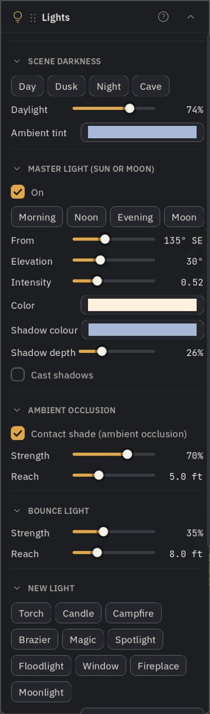
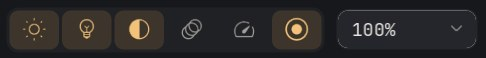

Light and shadow
Daylight sets how bright the shadows are, the sun or moon throws shadows from everything with a height, and lamps light what is under them in the layer stack.
Scene darkness
In the Lights tool (L), Day, Dusk, Night and Cave set the whole scene at once.
- Daylight is the light that reaches everywhere, shadows included. 100% means shadows are only as dark as the sun's extra light makes them.
- Ambient tint colours that light: blue for night, warm for a sunset.
- Daylight can go down to 0%: everything outside your lamps is black and the lamps keep their full colour (3D lighting).
- Overall brightness, Overall contrast, Overall saturation and Colour tone (cool to warm) grade the whole finished map; labels stay as drawn. Lamp exposure brightens or dims every lamp at once.
The sun or moon
- From is the direction it shines from, Elevation how high it is. A low sun throws long shadows: at 14 degrees a shadow is about four times as long as the thing is tall.
- Intensity and Color set its strength and colour.
- Shadow colour and Shadow depth set how dark and what colour every shadow is.
- Cast shadows turns sun shadows on for this map.
- Shadow fade and Fade over: long shadows are darkest at the foot of what casts them and lighten toward the tip, as in life. 0 gives even shadows.
- Soft edges: shadow edges blur the further they reach from the caster. 0 keeps them crisp.
- Lamp shadow fade and Lamp fade over: the same fade for lamp shadows (of things shorter than the lamp). It works with the sun off.
Heights come from the things themselves: walls use their height, props their Height (ft) (how tall they are) and Lift (ft) (how high they hang: a sail on its yard, a chandelier; the shadow then lands apart from it and lamps shine under it), roofs their eave and ridge, terrain its painted height.

Lamps
- Pick a preset under New light (torch, candle, campfire, brazier, magic, spotlight, floodlight, window, fireplace, moonlight) and click the map. Each preset has a sensible height: a candle 3 ft, a torch 7 ft.
- Drag a lamp to move it; drag its handles for reach, falloff, aim and width.
- Lamps cast shadows from walls and from every prop's outline. A lamp above a crate is not blocked by it.
- A lamp with Shadows off is a clean area light: only walls and buildings stop it. Tick Through walls as well and nothing stops it, for an overall fill light.
- Stays on its level: the light reaches only the ground it stands on and anything higher, so a cliff fully blocks it from everything below (3D lighting).
- Object lamps (a lantern, a brazier): untick Light this object so a sconce lights the room without glaring on itself.
- One building floor can take about 14 lamps. Past that, some lamps stop lighting that floor (their walls still light). Spread the lamps out or split a big hall into more than one building.
- Trees cast their crown's shadow plus a thin trunk shadow joining it to the tree.
- Hide a layer to switch its lamps off.
- Glowing art (lanterns, crystals, runes) can glow and cast real light of its own colour; see the object's Properties.
3D lighting
Lamps and the sun are lit and shadowed by a hidden 3D copy of the map: walls are solid with real door and window holes, props stand at their real height and lift, cliffs and terrain have their real slopes. Shadows soften as they widen, buildings with roofs only let the sun in through their doors and windows, and exports carry the same look.
- Render quality (top bar, and Settings > Speed), 10% to 100%: low settings give chunkier, softer shadows and much faster lighting while you work. Exports always render at full quality.
- 3D lighting in the Lights tool, under Master light (sun or moon), turns it off for the classic 2D lighting. The choice is kept on your computer, not in the map. Computers without Vulkan or Direct3D 12 use classic lighting.
- View > Show shadow shapes (3D) shows each object's 3D shape over the map, and the 3D view panel shows the whole copy. Shape any asset in the Asset Manager with Design 3D shape.
- Only things that exist on the map cast: a mast drawn into a ship's deck picture casts nothing. Add an object for it.
- Layer order does not matter to 3D lighting, only heights do. A prop partly over a step or a low ledge is lit just above the highest ground under it, and props lean only with gentle slopes, so stair edges do not show through them.
- A rope or beam lying on a dock: give the line a Lift (and a Thickness for its own shadow) in Properties > Height. Walls have Lift too: a railing or beam that hangs off the ground.
- The 3D view shows props with a Design 3D shape in that shape. If a shadow looks wrong there, check the shape's slices reach the top of the picture.
- Sun Soft edges can blur a step's light onto a prop sitting partly over it (a lighter patch). Lower it on that map if it shows.
Light and layer order
With 3D lighting, height decides what a lamp lights inside a room: a lamp on a table lights the floor, a chandelier lights the table. Layer order still keeps lamps under roofs and high mist: those stay unlit by lamps under them. With classic 2D lighting a lamp lights its own layer and every layer under it, never the layers above it.
In this stack the lamps sit under the roofs, so the roof tops stay dark while the floor and furniture are lit. Drag the Lights layer above Roofs and the lamps light the roofs too.
Bounce light (light spilling off lit surfaces) follows the top lamp: layers above every lamp get none.
Contact shade and bounce light
- Ambient occlusion (contact shade) darkens where things meet the ground and in tight corners. Strength and Reach in the Lights panel.
- Bounce light lifts shadows next to a lamp's pool or a sunlit wall and tints them with its colour.
Speed switches

The row of switches at the top right of the window turns heavy effects off while you work: sun shadows, lamp shadows, contact shade, animation, draft detail and the void, then the render scale. A lit switch is on.
Check the first switch (the sun). When it is off, no sun shadows show in the editor, even with Cast shadows ticked. The Lights panel says so and has a Show sun shadows button. Exports always have every effect.
View > Fast editing turns all of them off and drops the render scale to 50%. View > Full quality turns them back on. The switches are saved on your computer, not in the map.